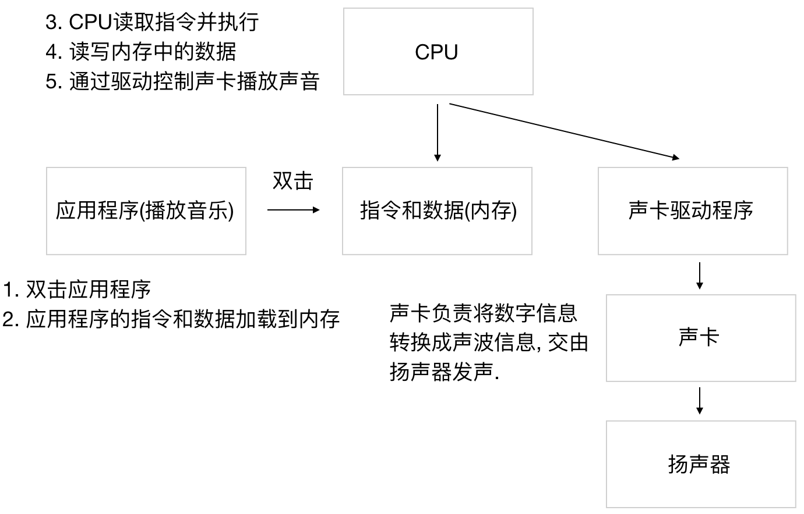

计算机组成
学习目标:
能够说出计算机有哪两部分组成
能够说出操作系统的作用
什么是计算机？
计算机（computer）俗称电脑，是现代一种用于高速计算的电子机器，可以进行数值计算，又可以进行逻辑判断，还具有存储记忆功能，且能够按照程序的运行，自动、高速处理数据，通俗理解就是一个存储和计算数据的电子设备。
计算机是20世纪最先进的科学技术发明之一。
计算机是由什么组成的？
一个完整的计算机系统，是由硬件系统和软件系统两大部分组成的。

1. 硬件系统：
主要分为主机和外设两部分，是指那些构成计算机系统的物理实体，它们主要由各种各样的电子器件和机电装置组成。
从ENIAC(世界上第一台计算机)到当前最先进的计算机，硬件系统的设计采用的都是 冯·诺依曼体系结构。

运算器: 负责数据的算术运算和逻辑运算，即数据的加工处理。
控制器: 是整个计算机的中枢神经，分析程序规定的控制信息，并根据程序要求进行控制，协调计算机各部分组件工作及内存与外设的访问等。运算器和控制器统称中央处理器（即CPU)
存储器: 实现记忆功能的部件，用来存储程序、数据和各种信号、命令等信息，并在需要时提供这些信息。
输入设备: 实现将程序、原始数据、文字、字符、控制命令或现场采集的数据等信息输入到计算机。
输出设备: 实现将计算机处理后生成的中间结果或最后结果（各种数据符号及文字或各种控制信号等信息）输出出来。
2. 软件系统：
主要分为系统软件和应用软件，是指计算机运行所需的各种各样的计算机程序。
系统软件的任务是既要保证计算机硬件的正常工作，又要使计算机硬件的性能得到充分发挥，并且为计算机用户提供一个比较直观、方便和友好的使用界面。
操作系统：是一种方便用户管理和控制计算机软硬件资源的系统软件，同时也是一个大型的软件系统，其功能复杂，体系庞大，在整个计算机系统中具有承上启下的地位。我们操作计算机实际上是通过操作系统来进行的，它是所有软件的基础和核心。
语言处理程序：也称为编译程序，作用是把程序员用某种编程语言(如Python)所编写的程序，翻译成计算机可执行的机器语言。机器语言也被称为机器码，是可以通过CPU进行分析和执行的指令集。

3. 计算机是如何处理程序的？
按照冯·诺依曼存储程序的原理，计算机的工作流程大致如下：
- 用户打开程序，程序开始执行；
- 操作系统将程序内容和相关数据送入计算机的内存；
- CPU根据程序内容从内存中读取指令；
- CPU分析、处理指令，并为取下一条指令做准备；
- 取下一条指令并分析、处理，如此重复操作，直至执行完程序中全部指令，最后将计算的结果放入指令指定的存储器地址中。

4. 编程语言是什么？
是用来定义 计算机程序 的形式语言。我们通过编程语言来编写程序代码，再通过语言处理程序执行向计算机发送指令，让计算机完成对应的工作。
简单来说，编程语言就是人类和计算机进行交流的语言。
5. 什么是Python？
Python就是一门编程语言，而且是现在世界上最流行的编程语言之一。